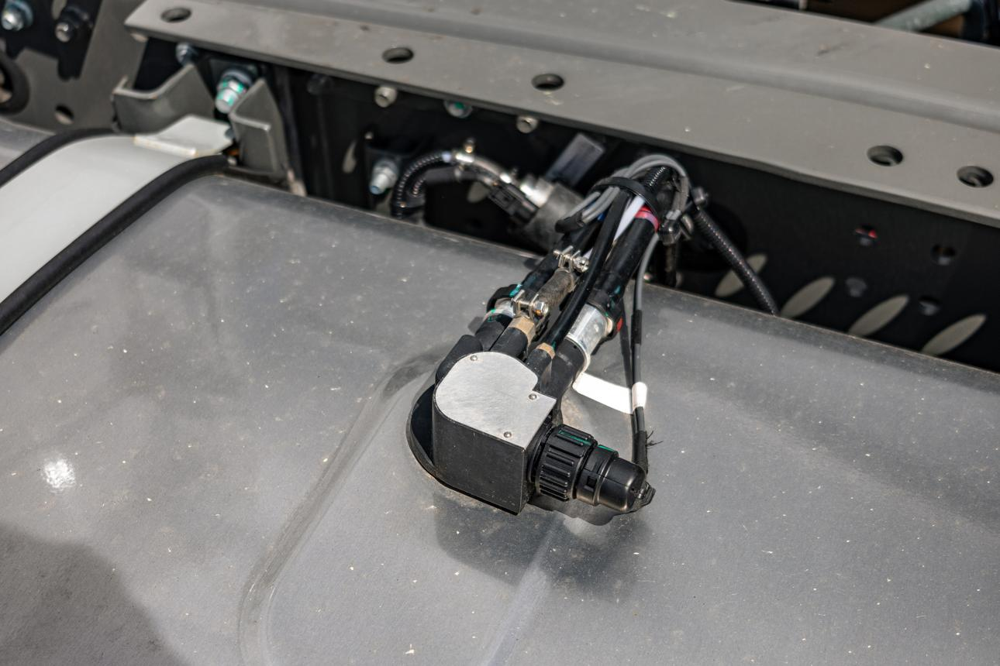
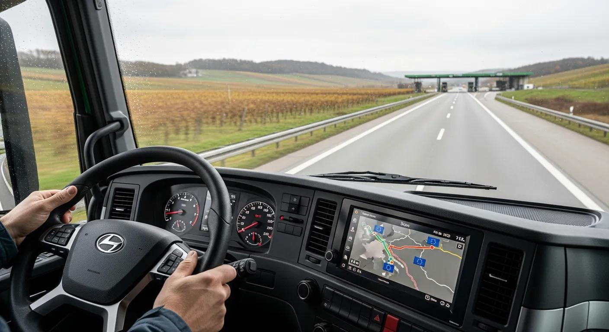
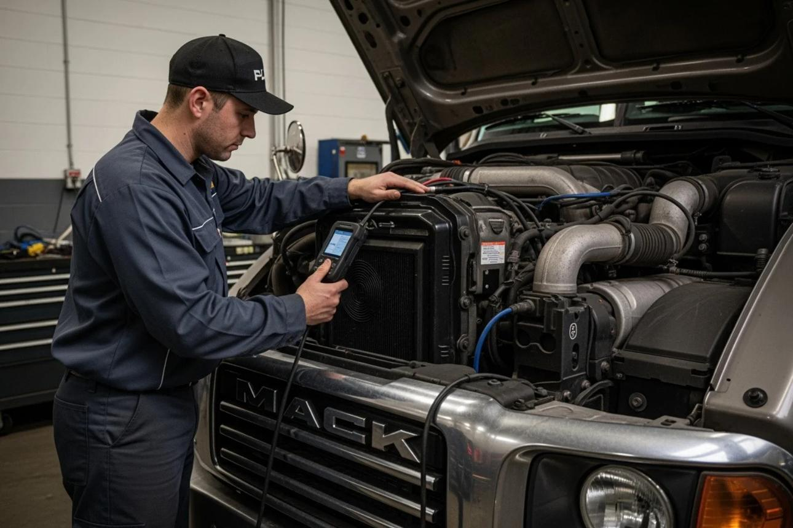

GPS
Live GPS & Geofencing
Sub-meter multi-constellation tracking with 1-second refresh and unlimited custom geofence zones.
From sub-meter GPS positioning and CAN-bus fuel audits to driver safety scoring, ELD compliance and cold-chain sensors — explore the full NaviFleet feature stack.

Six core modules that power every NaviFleet deployment — each built for real-world fleet operations, not marketing slides.
Sub-meter multi-constellation tracking with 1-second refresh and unlimited custom geofence zones.

FuelCAN-bus fuel probes detect siphon events and idling waste, cutting fleet fuel burn by up to 23%.

Safety3-axis G-sensor logs harsh braking, cornering and over-speeding into a 100-point driver score.

EngineOBD-II & J1939 CAN-bus diagnostics track coolant, oil temperature and battery health before breakdowns.
BLE temperature and humidity sensors protect pharma and perishables with automated audit compliance.
FMCSA-certified Hours of Service logging and automatic state-line mileage for IFTA reporting.
These aren’t checkbox features — they’re the workflows our customers use every single day to cut costs and prevent incidents.
Most platforms update every 30–60 seconds. NaviFleet streams position, speed, ignition state and CAN-bus telemetry every second — so you can catch hard braking events, sudden stops and route deviations while they’re still happening.
Every trip is scored automatically based on speeding, harsh braking, rapid acceleration and cornering. Drivers get a mobile scorecard; managers get a fleet-wide leaderboard. Coaching becomes data-driven instead of anecdotal.
 Safety
Safety
 Cold Chain
Cold Chain
Wireless Bluetooth Low Energy sensors in reefer trailers continuously monitor temperature and humidity. If a compartment drifts outside its band, you get an instant alert — and a full audit trail for FSMA and pharma compliance.
No complex IT project. No long integration cycles. Most fleets are tracking live within a single afternoon.
Choose the plug-and-play OBD-II dongle or hardwired J1939 gateway for your vehicle type.
Insert into the OBD-II port or connect the hardwire harness — under 10 minutes per vehicle.
Device activates itself on the 4G/LTE network and appears in your dashboard within minutes.
Set geofences, alerts and driver profiles — then watch your fleet in real time from day one.
The difference between “a dot on a map” and a real operational platform — side by side.

Book a 20-minute walkthrough with a fleet telematics engineer. We’ll show you the dashboard, live GPS feed, driver scoring and fuel analytics — using your own fleet size and use case.